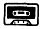

Nascom Journal |
2/81 |
Dieter Thoss
_____________ __
____ Pforzheim
D F 5 I D
| Leerkassetten |  | |
|
Speziell geeignet für Datenaufzeichnung. Hochwertiges BASF-Band.
Cassette 5-fach verschraubt. Cassette C10,d.h. 10
Minuten Spieldauer, daher besonders geeignet für
Mikrorechnerprogramme. |
||
|
10 Stk 20 Stk 50 Stk 100 Stk |
19.80 36.00 87.50 160.00 |
Jede Kassette mit selbstklebendem Aufkleber zum Beschriften. |
| Bei: |
M K – Systemtechnik __________ __ ____ Germersheim/Rhein Tel.: _____/____ |
|
Spielinhalt:
Das Programm gestattet dem Spieler, eine gewisse Zeit über die sagenumwobene Stadt „Sumeria“ zu regieren. Der Spieler muß für jedes Regierungsjahr verschiedene Entscheidungen treffen. Diese Eingaben werden teilweise mit zufälligen Werten verknüpft und ergeben die Entwicklung der Stadt. Durch geschicktes Taktieren und mit etwas Glück läß sich der Wohlstand und die Bevölkerung der Stadt vermehren. Nach Ende der Regierungszeit wird ein abschließendes Urteil über Ihre Regierungsmethoden ausgegeben. Sollten Sie es zu toll treiben, werden Sie allerdings schon vorzeitig abgesetzt.
Das Programm „Regierung“ wurde in BASIC auf einem Nascom-1 mit dem Monitor T4 geschrieben. Es läuft nach einigen Änderungen auch auf anderen BASIC-Maschinen. Als Grundlage diente ein Programm der Firma Feltron, veröffentlicht in Microcomputer-Software Gruppe 10.9/BASIC/ 79.04.15/Seite 1-4.
Es wurde nun speziell auf den Nascom zugeschnitten. In dieser Form eignet sich das Programm zum Vorführen auf Festen, Veranstaltungen im Familien- und Freundeskreis, da es sich selbst gegen unsinnige und flasche Eingaben schützt. Das Spiel erklärt sich selbst und fordert den Mitspieler zu den gewünschten Eingaben auf. Jede Eingabe im Spiel ist mit der Taste „NEW LINE“ abzuschließen. Ist das Spiel zu Ende, kehrt es durch eine Frageschleife zum Spielanfang zurück. Rückkehr in den Monitor ist auf zwei Arten möglich:
| Seite 9 von 20 |
|---|